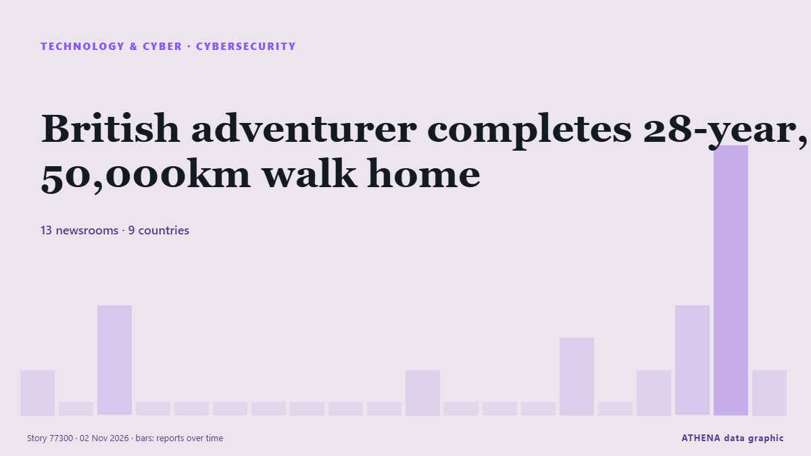

British adventurer completes 28-year, 50,000km walk home

A 57-year-old British adventurer, Karl Bushby, has returned home after completing a remarkable 28-year, 50,000-kilometre journey on foot across four continents without using any form of transport to… من Vanguard
نشرته بشكل مستقل 22 مصدرًا في 14 دولة منذ 31 أكتوبر، وأول من نشره The Korea Times؛ والتغطية تتراجع. يقدّر ATHENA الخطر بأنه معتدل (2.8/10)، ويعود ذلك أساسًا إلى خطورة الضرر الموصوف ونطاقه الجغرافي والقطاعي. الثقة 91٪ (مرتفعة)، وعدد المصادر المستقلة المؤكِّدة: 22، بمتوسط موثوقية للمصادر يبلغ 73٪. وسائل الإعلام حسب البلد: المملكة المتحدة (13), نيجيريا (2), الولايات المتحدة (2). التغطية: من 31 أكتوبر إلى 3 نوفمبر، 75 ساعة.
لماذا يهم: تشكّل تطورات التكنولوجيا والأمن السيبراني الأمنَ والمنافسة وقواعد الحياة الرقمية.
ما الذي تغيّر: 23 تقارير جديدة من 19 غرف أخبار خلال 24 ساعة حتى 3 نوفمبر.
العنوان الأول: Adventurer Karl Bushby 48 hours away from completing epic 28-year journey
تُعرض العناوين بالإنجليزية كما نُشرت.
نظرة سريعة
اختير وقُيِّم وكُتب وفق منهجية ATHENA المنشورة. لا يتدخل أي محرر في الأحداث بعينها. كيف يُنتَج ›
| 31 Oct 06:02 UTC | 1 |
|---|---|
| 31 Oct 09:02 UTC | 0 |
| 31 Oct 12:02 UTC | 3 |
| 31 Oct 15:02 UTC | 0 |
| 31 Oct 18:02 UTC | 0 |
| 31 Oct 21:02 UTC | 0 |
| 01 Nov 00:02 UTC | 0 |
| 01 Nov 03:02 UTC | 0 |
| 01 Nov 06:02 UTC | 0 |
| 01 Nov 09:02 UTC | 0 |
| 01 Nov 12:02 UTC | 1 |
| 01 Nov 15:02 UTC | 0 |
| 01 Nov 18:02 UTC | 0 |
| 01 Nov 21:02 UTC | 0 |
| 02 Nov 00:02 UTC | 2 |
| 02 Nov 03:02 UTC | 0 |
| 02 Nov 06:02 UTC | 1 |
| 02 Nov 09:02 UTC | 3 |
| 02 Nov 12:02 UTC | 8 |
| 02 Nov 15:02 UTC | 6 |
| 02 Nov 18:02 UTC | 2 |
| 02 Nov 21:02 UTC | 2 |
| 03 Nov 00:02 UTC | 0 |
| 03 Nov 03:02 UTC | 0 |
| 03 Nov 06:02 UTC | 2 |
| 31 Oct 14:04 UTC | 0.0 |
|---|---|
| 01 Nov 19:44 UTC | 0.9 |
| 02 Nov 13:54 UTC | 2.2 |
| 02 Nov 15:05 UTC | 3.3 |
| 03 Nov 08:50 UTC | 2.8 |
لماذا هذه الأرقام
الأهمية
الخطر
الثقة
التغطية — من نشر الخبر ومتى
العنوان كما نُشر · يفتح الأصل- The Korea Times · كوريا الجنوبيةIn 28 years of walking, Karl Bushby has overcome jungle, desert and red tape. Now he's nearly home
- Evening Standard (London) · المملكة المتحدةAdventurer Karl Bushby 48 hours away from completing epic 28-year journey
- Belfast Telegraph · المملكة المتحدةAdventurer Karl Bushby 48 hours away from completing epic 28-year journey
- News of Bahrain · البحرينAfter 28 Years, the Long Walk Home Is Almost Over
- Evening Standard (London) · المملكة المتحدةAdventurer Karl Bushby to complete epic 28-year journey home
- Belfast Telegraph · المملكة المتحدةAdventurer Karl Bushby to complete epic 28-year journey home
- Yorkshire Post · المملكة المتحدةKarl Bushby: Adventurer to complete epic 28-year journey home to Hull today
- RTÉ News · أيرلنداAdventurer returns home after 28-year trek across globe
- The Irish News (Belfast) · المملكة المتحدةAdventurer Karl Bushby arrives in Hull after 28-year walk from South America
- Belfast Telegraph · المملكة المتحدةAdventurer Karl Bushby arrives in Hull after 28-year walk from South America
- DW English · ألمانياGlobal pedestrian Karl Bushby returns home to UK after 28-year trek
- Yorkshire Post · المملكة المتحدةIn pictures: Karl Bushby makes return to Hull after 28-year journey across the world
- Yorkshire Post · المملكة المتحدة'Is that it?' jokes round-the-world walker Karl Bushby as he makes it home to Hull
- Cyprus Mail · قبرصUK adventurer returns home after 28-year trek around the world
- Vanguard · نيجيرياBritish adventurer completes 28-year, 50,000km walk home
- Punch · نيجيرياUK adventurer completes 28-year, 50,000km trek
- ABC News (International) · الولايات المتحدةKarl Bushby embraces emotional mom as he finishes 28-year, 31K-mile walk around world
- ABC News Australia · أسترالياBritish adventurer reunites with mum after 28-year round-the-world walk
- The Jerusalem Post · إسرائيلUK adventurer Karl Bushby returns home after 28-year trek around the world
- France 24 English · فرنساBritish adventurer arrives back at mother's home after 28-year journey
- The Irish News (Belfast) · المملكة المتحدةAdventurer Karl Bushby’s mum asks ‘where have you been’ after 28-year walk ends
- Belfast Telegraph · المملكة المتحدةAdventurer Karl Bushby’s mum asks ‘where have you been’ after 28-year walk ends
- Al Jazeera English · قطرBritish adventurer Karl Bushby returns home after 28-year walk around world
- Yorkshire Post · المملكة المتحدة'Where have you been?' - Karl Bushby's mother meets adventurer on his return to Hull
- Chronicle Live (Newcastle) · المملكة المتحدةHull adventurer Karl Bushby opens up on challenges of extraordinary journey
- SBS News · أسترالياUK adventurer embraces mother after completing 28-year trek around the world
- PBS NewsHour · الولايات المتحدةKarl Bushby embraces his mother as he completes his 28-year walk around world
- Euronews English · فرنساBritish adventurer returns home after 28-year journey around the world
- Indian Express · الهندOnce dyslexic, Karl Bushby completes 28-year walk around the world
- Greek Reporter · اليونانBritish Adventurer Returns Home After 28-Year Walk Around the World